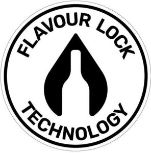

Trade Mark Journal No.2026/006 6 February 2026
WO0000001892802 (32,33,40)
Office of origin: Australia
Date of International Registration:8 October 2025
Date of designation in the UK:
8 October 2025

International priority date claimed: 3 July 2025
(Australia)
(2563186)
- Class 32
- Beer; non-alcoholic beers; ale; porter; non-alcoholic beverages; alcohol-free wine; de-alcoholised wines; alcohol-free beverages; fruit juices; grape juice; non-alcoholic fruit extracts; preparations for making non-alcoholic beverages.
- Class 33
- Wine; alcoholic beverages, except beer.
- Class 40
- Consultancy in the field of wine making; consultancy in the field of wine making and for the manufacture of new wine products; custom manufacture of alcoholic and non-alcoholic beverages; custom manufacturing, producing, brewing, and fermenting beverages including wine and beer; winemaking services; brewing services; brewing of beer; custom manufacturing, producing, brewing, and fermenting of alcoholic beverages including wine and beer for others; custom assembling of materials for others; food and drink processing and preservation; fruit crushing; food processing services, namely treatment and processing of food and drink, included in this class; provision of information in respect of all the foregoing; consulting and advising in respect of all the foregoing.
Rothbury Wines Pty Ltd
Representative: Keltie LLP, No.1 London Bridge London SE1 9BA UNITED KINGDOM